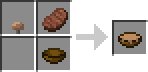
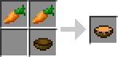
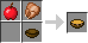

About
So the Soup Mod is my first real attempt at getting into Minecraft Modding. I though it would be fun to add some soups to Minecraft. I think this mod can really be handy for those that find it hard to find food at the beginning of the game. It also makes the wooden bowl more useful. Unlike mushroom stew these soups are sipped! Enjoy!
Recipes
Split Pea Soup (1)
Pumpkin Soup (1)
Cactus Soup (1)
Potato Soup (3)

Beef Stew (9)

Carrot Soup (9)
Chicken Noodle Soup (9)
Wonton Soup (11)

Mulligatawny Soup (11)